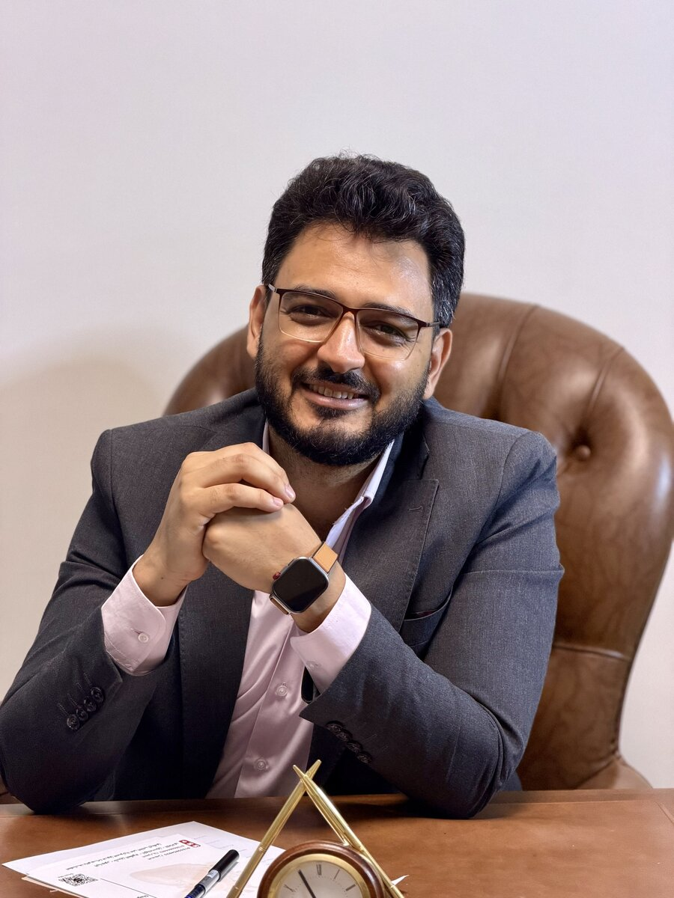
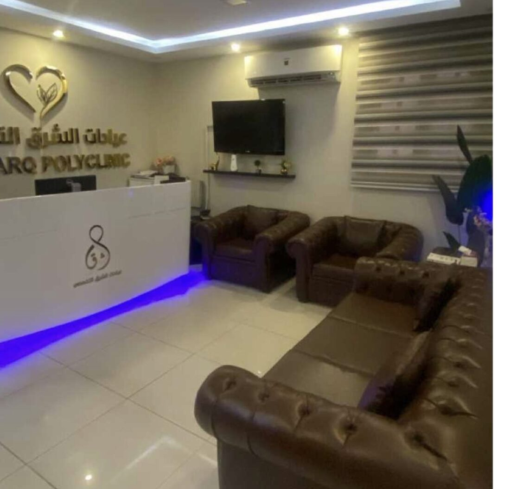
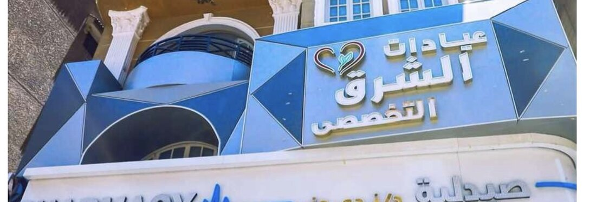

د. بهاء القصاص
استشاري أمراض القلب والقسطرة القلبية. تشخيص دقيق ومتابعة مستمرة لصحة قلبك، في عيادة بالمعادي الجديدة.

نبذة عن الدكتور
د. بهاء محمد عبد المجيد القصاص، استشاري أمراض القلب والقسطرة القلبية بمعهد القلب القومي، حاصل على الدكتوراه في أمراض القلب، ويستقبل مرضاه في عيادات الشرق التخصصي بالمعادي الجديدة.
يجمع بين الخبرة في أحد أكبر مراكز القلب في مصر والمتابعة القريبة لكل حالة، من أول التشخيص حتى الاستقرار.
- استشاري أمراض القلب والقسطرة القلبيةمعهد القلب القومي
- دكتوراه أمراض القلب
- عيادات الشرق التخصصيالمعادي الجديدة، القاهرة
الخدمات
فحوصات وعلاج ومتابعة لأمراض القلب والشرايين.
القسطرة القلبية التشخيصية والعلاجية
تصوير الشرايين التاجية وعلاج الانسدادات.
تخطيط القلب الكهربائي (ECG)
فحص سريع لكشف اضطرابات ضربات القلب.
إيكو على القلب
تقييم عضلة القلب والصمامات بالموجات فوق الصوتية.
هولتر القلب لمدة 48 ساعة
تسجيل مستمر لنشاط القلب لكشف اضطرابات النظم التي لا تظهر في التخطيط العادي.
متابعة الضغط والكوليسترول
خطط علاج ووقاية لتقليل مخاطر أمراض القلب.
متابعة مرضى القلب المزمنين
متابعة دورية لضبط الحالة على المدى الطويل.
داخل العيادة
عيادات الشرق التخصصي، مجهزة لراحتك من لحظة الاستقبال.



فيديوهات الدكتور
فيديوهات توعية وحالات من العيادة وغرفة القسطرة. اضغط على أي فيديو وشغّله هنا في الموقع.
آراء وتقييمات المرضى
كلمات مرضى زاروا العيادة، منقولة كما كتبوها بدون أي تعديل.
ماشاء الله دكتور عنده ضمير لابعد الحدود ومش تاجر نهائي وشاطر جدا جدا ومريح وبجد ربنا يباركله
الدكتور بهاء محترم جدا ومريح وبيهتم بالتفاصيل ودا كان مهم جدًا بالنسبالي قمه الذوق تحس انك بتتعامل مع حد تعرفه من زمان
Excellent service and very helpful, empathetic staff. The nurse was especially considerate during my ECG and Echo, ensuring I was comfortable and properly covered. The doctor explained everything clearly and the clinic is well equipped.دكتور محترم جدا، مستمع جيد جدا وبيشرح كل حاجه بهدوء واسلوب مريح، من احسن الدكاتره اللي اتعاملت معاها
دكتور ممتاز ربنا يباركله ويحفظه اخدنا وقتنا باستفاضه وشرح مفصل للحاله بتفاصيلها وبشوش جدا جزاه الله خيرا
دكتور محترم جدا ومستمع جيد وبيشرح الحاله والعلاج بوضوح ربنا يباركله
دكتور محترم جدا فوق الوصف ربنا يباركله مستمع جيد جدا وبيتعامل مع المريض بكل انسانيه
الدكتور ممتاز جداً وبيسمع كويس، واستمع جيد، وفاهم اللي عندي من أول كلامي.
الدكتور بهاء بشوش جدا يستمع جيدا منتهي الإنسانيه بالإضافة انه ماهر ومهتم وشاطر
عرض باقي التقييماتإخفاء التقييمات
ممتاز جدا ربنا يوفقك
دكتور ممتاز و مستمع جيد جدا و شاطر
الدكتور مستمع جيد وبيعطي وقت للمريض للمناقشه
دكتور ممتاز ومستمع جيد
كل شيء ممتاز
احسن واشطر دكتور ممكن تقابله
شاطر جداً
دكتور محترم جدا و يقدر يساعدك و بيسمع منك و لطيف و العياده محترمه و نظيفة
ممتاز
الدكتور مستمع جيد ويشرح للمريض. معطيا اياه وقت كافي
دكتور ممتاز جدا و مستمع جيد
مستمع جيد وبيعطي المريض حقه وبيفهمه كل حاجه براحه دكتور ممتاز
ربنا يباركلة ويسترها على دكتور محترم جدا وبيتقى ربنا ف المريض وبيراعى ربنا
الدكتور مستمع جيد و شرحه مفصل جدا و متعاون لكن اسعار بعض الخدمات غير محدثة
ممتازة
دكتور محترم ومستمع جيد
Professional and good listener nice assistant and clean easy to find building great Englishالدكتور محترم جدا ويستمع بهدوء لشكوى المريض جزاه الله عنا خيرا
he's amazing 🫡دكتور ممتاز ربنا يبارك فيه مستمع جيد ومريح وبيطمن الحمد لله
المعاملة جيدة والدكتور ممتاز والمكان راقى
دكتور ممتاز ومستمع جيد
دكتور تمام
مستمع جيد
كويس جدا وبيسمع
ممتاز
تابعنا
نصائح قلبية مبسطة وفيديوهات توعية بشكل مستمر على صفحات الدكتور.
تواصل معنا
احجز موعدك أو اتصل بالعيادة لأي استفسار.

مدخل المبنى، والعيادة أعلى صيدلية د. ندى منير.